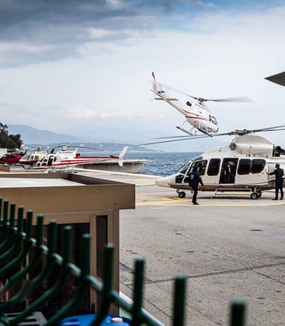
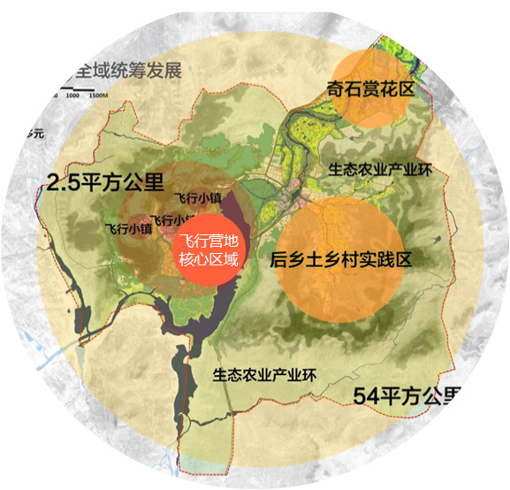

发展要求
运营企业
在运营能力上，首先企业应有较强的军民航双方及地方政府的协调能力，确保天气好就能飞；其次应具有良好的运行组织保障能力，确保飞行安全，做好油料、维修等自我保障；第三要有一定的配套设施，如舒适的座椅、恒温的阳光房、地面娱乐服务；第四是要有强有力的营销推广模式及团队。
对航空器的要求
开展空中游览活动需要使用小型轻便、成本低廉、平稳安全、适于低空慢速飞行的航空器，其中城市型、景区型游览以6座级单发直升机和西锐SR-20等下单翼固定翼飞机为主，体验性、训练型游览以罗宾逊系列直升机、塞斯纳172等上单翼训练飞机为主，交通型游览则以塞斯纳-208、皮拉图斯PC-12、Y-12E等19座以下固定翼飞机为主。
对航路航线的要求
根据不同的飞行类型，所使用的航线有所不同，但城市型游览飞行高度一般在300米以上。此外企业应根据景点特点，设计价格不同、长短不一的航线供客户选择，同时以点为中心运营，开通多条航线，增加产品的多样性。
对专业人员的要求
正规合法的飞行和商业手续以及专业的管理团队：空中游览要求使用商照飞行员。对于与短途运输相结合的135部低空旅游，如按目视飞行则使用商照飞行员，仪表飞行则需要配备航线飞行员。
对综合开发的要求
从综合开发看，需要以飞行为亮点，实现综合配套开发。如提供游客拍照录像服务、婚纱摄影写真服务、航空文化产品销售、航空主题宾馆（报废飞机改装旅馆、飞行主题宾馆等）、娱乐风洞、模拟飞行体验馆等，并在景区配套钓鱼、烧烤、爬山、骑行、真人CS、摩托艇、游艇等。

注：以上材料来自相关法规、标准、审批程序及网站信息整理
运营载体――飞行营地
飞行营地：不只是单个业态，而是从小型营地，到复合业态综合体，到产业特色小镇
提升小众体验，带动大众消费：为航空体育爱好者解决建设机场投入大、周期长的困难。
方便集中管理和服务低空飞行，尤其是“低慢小”飞行器的航空飞行活动。
目标：
到2020年，建立航空飞行营地2000个、各类航空运动俱乐部1000家，参与航空运动消费人群达到2000万人，整体产业经济规模达到2000亿元。
预估效益：
2000家飞行营地建成后，飞行员缺口将会超过10万人；仅飞行员及运营人员培训，市场直接需求就超过500亿元。
消费人数达到2000万，则营地运营人才缺口将突破50万人。
将衍生出庞大的航材及飞行设备消费需求以及基础建设需求，以一个航空飞行营地500万元航空器的需求来算，就可带动各类运动类航空器材销售总值超过1000亿元，间接生产总值拉动或超4000亿元。
注：以上材料来自相关法规、标准、审批程序及网站信息整理
案例――许家崖航空飞行营地
航空飞行运动大众化旅游发展：小众带大众，“飞”引流，“不飞”盈利
国家航空飞行营地示范单位
地理位置
临沂：是国务院批复确定的鲁东南地区中心城市，地处长三角经济圈与环渤海经济圈结合点。
费县：临沂的卫星城、后花园、水源地、能源基地以及科教重地；
许家崖：地处山区，以奇石异岩、梨园风光、佛教文化远近闻名，形成了著名的石林梨乡旅游区。
航空飞行营地：许家崖水库西侧，规划占地1300亩，总投资6.7亿元，有1500平方公里报告空域。
空间布局
54平方公里
飞行运动辐射带动的区域旅游、农业产业与乡村发展实践区
2.5平方公里
“1+3”飞行特色发展辐射核
许家崖航空飞行营地带动周边三个航空小镇
1000平方公里
飞行活动空域区，费县低空旅游发展战略布局

注：以上材料来自相关法规、标准、审批程序及网站信息整理
经营模式
1、超级赛事IP引流：初期凭航空运动吸引全国各地数万游客，周边群众自发形成规模集市；后期打造世界飞行的热点――许家崖飞行嘉年华（化妆飞行狂欢+飞行器灯光秀+盛装聚会+儿童活动区+飞行装备展）、公益飞行系列活动、专业国际飞行赛事、中国低空旅游发展论坛。
2、跨界融合发展：
旅游+体育：低空旅游目的地、乡村运动公园、国家级低空飞行运动比赛基地、低空飞行用具生产组装基地；
旅游+教育：全民飞行兴趣培养与教育的乡村示范课堂、中国专业飞行人才成长的田园摇篮、特色乡村发展模式实践区；
旅游+乡村就业：村民再就业、退伍军人再就业等。
3、多元化产品体系：
小众产品极致化，极限运动、飞行培训、生产组装基地、赛事基地等主流业务；
大众产品主题化，开发低空旅游、乡村旅游、运动俱乐部、飞行主题营地公园、花海飞行跑道等旅游体验，民宿、飞行衍生产品商店、机库博物馆、飞行主题婚礼等拓展产品；
专业产品教育：营地建设经营社会培训。
4、社区经营：
改造提升社区飞行主题环境，推进飞行运动社区教育，引导社区经营精品旅舍、乡土有机餐馆，组建骑士俱乐部提供户外运动、低空飞行等服务。
案例――Morningside飞行公园
美国新罕布什尔州查尔斯顿的Morningside飞行公园是全球航空飞行营地中的翘楚。
概况
公园中间的核心区域是一个功能性的存在，如飞行跑道等，同时在它周边的山体与树林里也设置了很多项目，包括滑索、划船等，使整个营地的活动内容更加丰富。另外，还有线上与线下的装备销售，以及与外围活动的联动，如训练营、电影院、住宿、模拟屋、公园等，各种各样的项目参与联合在一起共同推出，整个项目更受人们欢迎。
经营模式
1、全小众收入：体育运动集群/户外运动产业链
做好飞行运动产品；
提供其他类型的体育活动和可参与性项目。
飞行运动+滑索、皮划艇、激光射击等多种类型的可参与性活动+飞行培训+宿营地生活服务+装备销售等收入来源。
2、刺激大众消费：
根据四部委下达的《关于做好通用航空示范推广有关工作的通知》，对于飞行营地，“具有一定的航空运动发展基础，能够满足航空体育消费需求，与地方旅游资源深度融合，发展趣味性、体验型、丰富多样的航空运动消费产品”。
3、与飞行相关的节庆与赛事活动
具有强大的视觉冲击力，可以在集中时间形成盛大的人流量，从而创造出强烈品牌认知。世界上一些著名的热气球节，比如美国新墨西哥州的国际热气球节、英国布里斯托市的国际热气球节，往往都会吸引几百万的游客专程而来，从而巨大的影响力和消费市场。
4、婚庆产业
5、飞行相关的教育、培训的活动；结合产业链与衍生品带动文创内容；带动儿童产业。
6、场景体验营地住宿
案例――瑞士航空主题餐厅
瑞士航空主题餐厅创意新奇 报废飞机变身包厢
一名瑞士飞行员选择一架报废的俄罗斯伊尔-14型运输机在政府的支持下在苏黎世机场旁建成了航空主题餐厅。它拥有巨大的机库外观，飞机被放置在餐厅内，餐厅外可以看到机场跑道，飞机客舱变成了包厢，驾驶舱的设备被保留下来，供客人参观。被称为航空文化氛围最浓厚的主题餐厅。
结语
低空旅游是近年来的旅游人们话题，然而国内的发展目前还在“叫好不叫座”、“打雷不落雨”的阶段。
产品层面，直升机、热气球、滑翔伞、动力三角翼是目前开发可行性最强、普及程度最高的类型。发展条件层面，国内低空旅游的发展前景良好，然而实际限制众多、现实门槛和运营难度较高，主要体现在较复杂的审批流程、难以“自负盈亏”的市场规模。本研究就此梳理了流程审批要点，并就“复合化经营”的“低空旅游+”产品形态进行了阐述及案例分享。
总而言之，本研究就低空旅游发展要点进行了一些梳理，力图以落地运营为导向，就此课题提供些许有价值的参考。